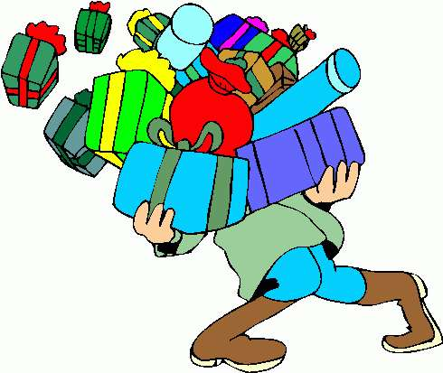

Five Things I Like
All of us have our likes and dislikes. So have I, my dislikes are many. But out of my likes I have five on the top. These are poetry, music, excursions, meeting people and reading thought provoking books and magazines. Being a student of literature, I have read Wordsworth and his poems have left their lasting effect on me. Other poets of nature who have impressed me most are Keats, Robinson. Music people say, has its effect even on trees, plants, animals and their growth. Milch cows have shown better yield of milk due to music I like Michael Jackson the most. I have gone on excursions to almost all nearby hill stations and health resorts. I prefer to go on educational, scientific and historical tours also. Meeting people from various professions is my another hobby. I have pen-friends among intellectual, artistes, actors, Dancers, Scientists and University Professors. Reading books on Philosophy, Religion, Anthropology, World History and Literature is my last liking. I subscribe to magazines and read books on these subjects.